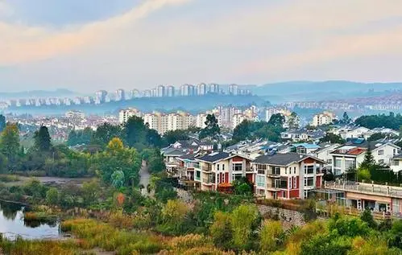

综述
2020年，安宁市实现地区生产总值(GDP) 572.36 亿元，比上年下降2.1％。在地区生产总值中，第一产业实现增加值20.96亿元，比上年增长2.4％；第二产业实现增加值344.61亿元，比上年下降4.5％，其中：工业实现增加值336.44亿元，比上年下降4.1％；第三产业实现增加值206.79亿元，比上年增长3.3％。一、二、三产业增加值比重分别为3.66%、 60.21 %和36.13%。非公经济实现增加值146.77亿元，增长3.0%，占全市地区生产总值的24.5％。
安宁市，云南省直辖县级市，由昆明市代管。位于昆明市西南32千米处，是通往滇西8个地州，并经畹町直接与缅甸相连的交通重镇。东北与西山区相连，东南接晋宁区，西邻玉溪市易门县、禄丰市，总面积1301.81平方千米 [1] ，平均海拔1800米。2019年平均气温16.9℃，年降雨量749.1毫米，日照时间2260小时。1995年撤县设市，安宁市辖9个街道办事处，有63个村民委员会，36个社区居民委员会。 [1-3] 根据第七次人口普查数据，截至2020年11月1日零时，安宁市常住人口为483753人。
安宁历史悠久，被誉为“螳川宝地，连然金方”。安宁地理优越、交通发达，320国道直通缅甸，昆安、安楚高速，成昆铁路等穿境而过，安晋高速、昆广铁路复线已开工建设，柏油路直达各行政村。安宁距昆明32公里，是昆明通往滇西8个地州，并经畹町直接与缅甸相连的交通重镇。
2019年以来，先后被评为2019年度全国综合实力百强县市 [4] 、2019年度全国新型城镇化质量百强区、 [5] 2019中国西部百强县市、 [6] 2019全国营商环境百强县、2019年全国投资潜力十强县(市)第一名、全国乡村治理体系建设试点单位。 [7] 2020年12月，社科院发布《全国县域经济综合竞争力100强》，安宁排名第43 [8] 。
2020年，安宁市实现地区生产总值(GDP) 572.36亿元，比上年下降2.1％。

2020年，安宁市实现地区生产总值(GDP) 572.36 亿元，比上年下降2.1％。在地区生产总值中，第一产业实现增加值20.96亿元，比上年增长2.4％；第二产业实现增加值344.61亿元，比上年下降4.5％，其中：工业实现增加值336.44亿元，比上年下降4.1％；第三产业实现增加值206.79亿元，比上年增长3.3％。一、二、三产业增加值比重分别为3.66%、 60.21 %和36.13%。非公经济实现增加值146.77亿元，增长3.0%，占全市地区生产总值的24.5％。
2019年，安宁市实现农林牧渔业总产值30.94亿元，其中：农、林、牧、渔业及农林牧渔服务业分别完成总产值15.5亿元、0.77亿元、13.76亿元、0.21亿元和0.70亿元。实现农林牧渔业增加值18.42亿元 [1] 。
2019年，安宁市工业总产值为1122.4亿元，比2018年增长4.8%，规模以上工业企业总产值为1105.4亿元，比2018年增长4.7%。2019年，安宁市地方财政总收入达239.28亿元，比2018年增长17.2%。其中：一般公共财政预算收入47.14亿元，比2018年增长27.3%；上划中央“四税”收入182.02亿元，比2018年增长14.9%。

2019年，安宁市批发零售业商品销售总额达1121.1亿元，比2018年增长12.4%；其中：批发业实现销售额1057.57亿元，比2018年增长12%；零售业实现销售额63.53亿元，比2018年增长19.5%。全市住宿业实现营业额3.47亿元，比2018年增长14%；餐饮业实现营业额11.37亿元，比2018年增长15.2%。